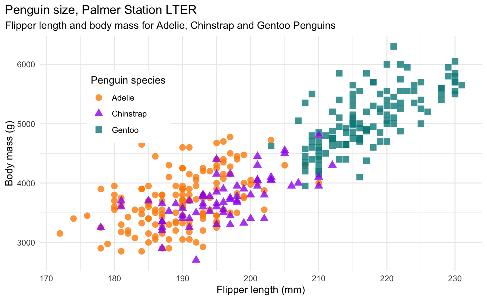
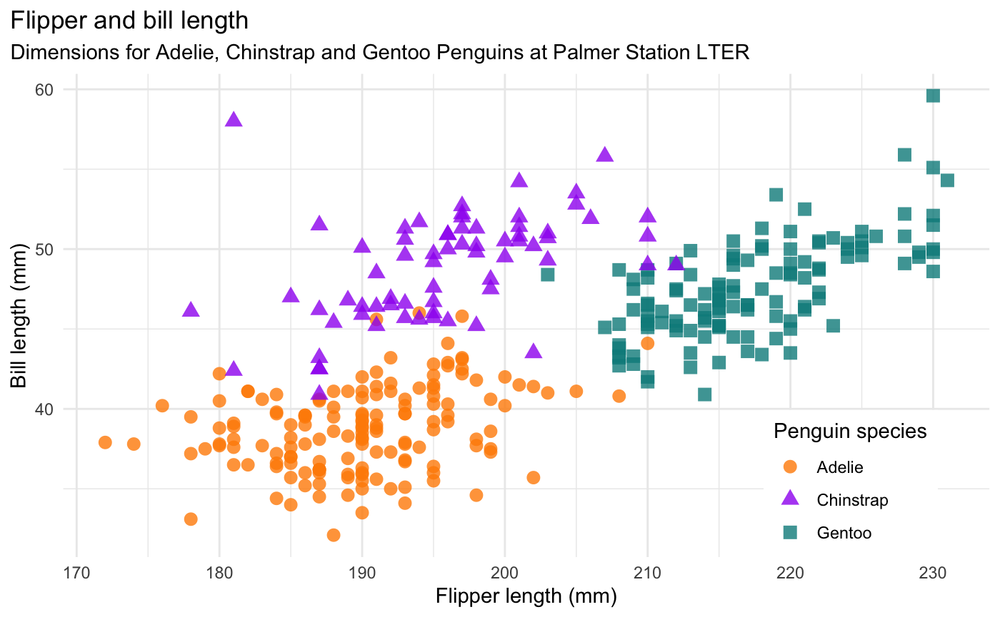
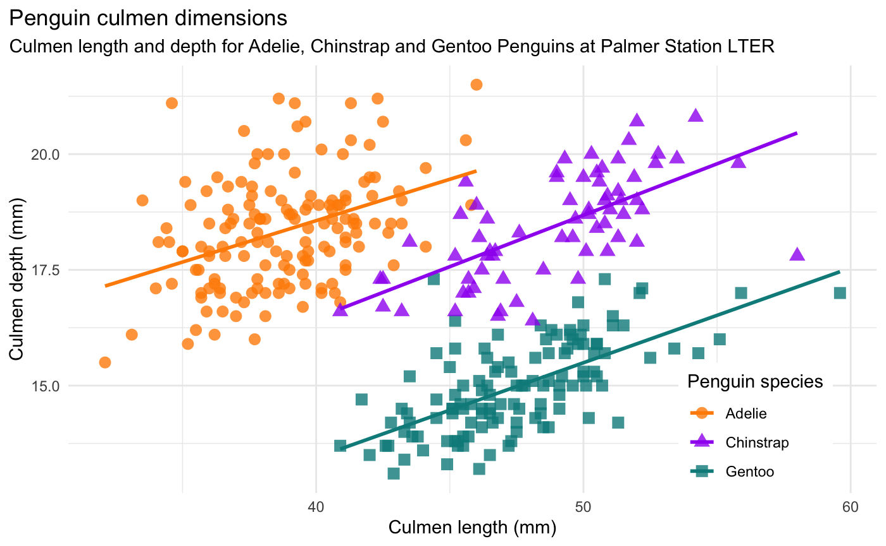
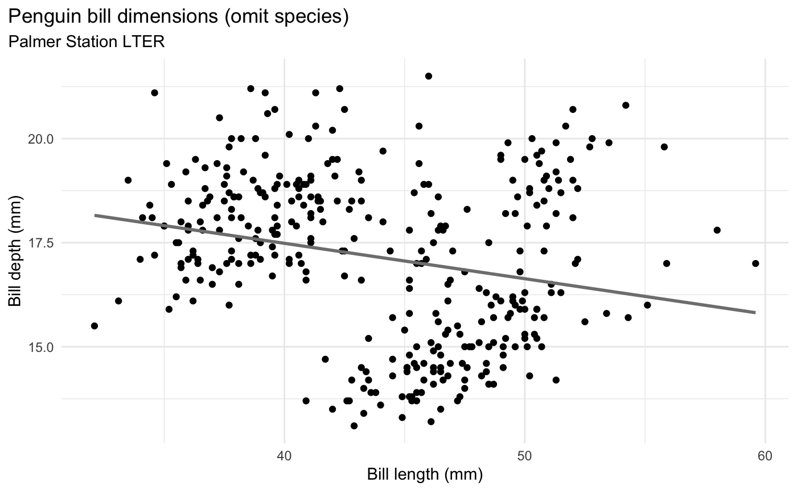
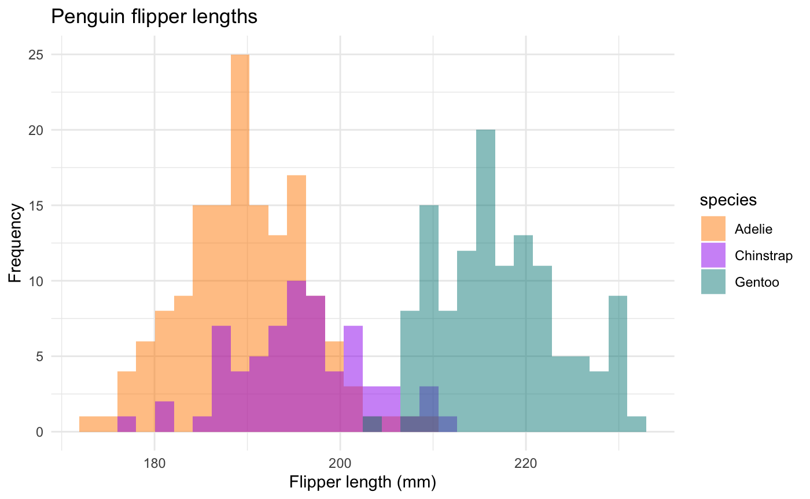
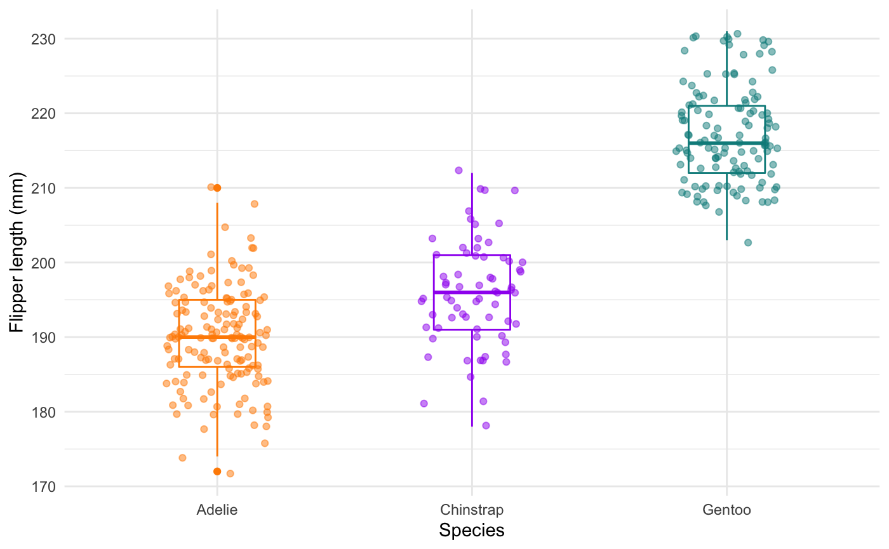
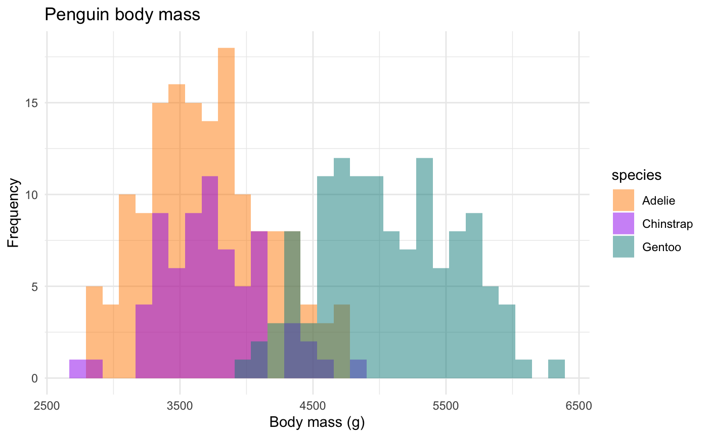
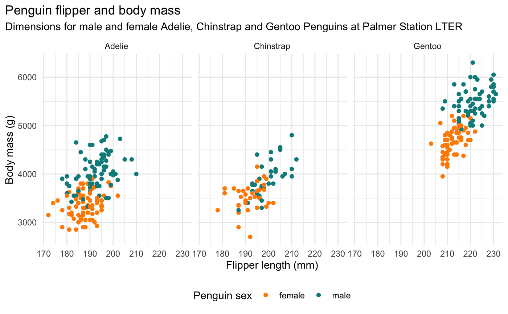

mass_flipper <- ggplot(data = penguins, aes(x = flipper_length_mm, y = body_mass_g)) + geom_point(aes(color = species, shape = species), size = 3, alpha = 0.8) + theme_minimal() + scale_color_manual(values = c("darkorange","purple","cyan4")) + labs(title = "Penguin size, Palmer Station LTER", subtitle = "Flipper length and body mass for Adelie, Chinstrap and Gentoo Penguins", x = "Flipper length (mm)", y = "Body mass (g)", color = "Penguin species", shape = "Penguin species") + theme(legend.position = c(0.2, 0.7), legend.background = element_rect(fill = "white", color = NA), plot.title.position = "plot", plot.caption = element_text(hjust = 0, face= "italic"), plot.caption.position = "plot") mass_flipper #> Warning: Removed 2 rows containing missing values (geom_point).

flipper_culmen <- ggplot(data = penguins, aes(x = flipper_length_mm, y = culmen_length_mm)) + geom_point(aes(color = species, shape = species), size = 3, alpha = 0.8) + theme_minimal() + scale_color_manual(values = c("darkorange","purple","cyan4")) + labs(title = "Flipper and culmen length", subtitle = "Dimensions for Adelie, Chinstrap and Gentoo Penguins at Palmer Station LTER", x = "Flipper length (mm)", y = "Culmen length (mm)", color = "Penguin species", shape = "Penguin species") + theme(legend.position = c(0.85, 0.15), legend.background = element_rect(fill = "white", color = NA), plot.title.position = "plot", plot.caption = element_text(hjust = 0, face= "italic"), plot.caption.position = "plot") flipper_culmen #> Warning: Removed 2 rows containing missing values (geom_point).

culmen_len_dep <- ggplot(data = penguins, aes(x = culmen_length_mm, y = culmen_depth_mm, group = species)) + geom_point(aes(color = species, shape = species), size = 3, alpha = 0.8) + geom_smooth(method = "lm", se = FALSE, aes(color = species)) + theme_minimal() + scale_color_manual(values = c("darkorange","purple","cyan4")) + labs(title = "Penguin culmen dimensions", subtitle = "Culmen length and depth for Adelie, Chinstrap and Gentoo Penguins at Palmer Station LTER", x = "Culmen length (mm)", y = "Culmen depth (mm)", color = "Penguin species", shape = "Penguin species") + theme(legend.position = c(0.85, 0.15), legend.background = element_rect(fill = "white", color = NA), plot.title.position = "plot", plot.caption = element_text(hjust = 0, face= "italic"), plot.caption.position = "plot") culmen_len_dep #> `geom_smooth()` using formula 'y ~ x' #> Warning: Removed 2 rows containing non-finite values (stat_smooth). #> Warning: Removed 2 rows containing missing values (geom_point).

culmen_no_species <- ggplot(data = penguins, aes(x = culmen_length_mm, y = culmen_depth_mm)) + geom_point() + theme_minimal() + scale_color_manual(values = c("darkorange","purple","cyan4")) + labs(title = "Penguin culmen dimensions (omit species)", subtitle = "Palmer Station LTER", x = "Culmen length (mm)", y = "Culmen depth (mm)") + theme(plot.title.position = "plot", plot.caption = element_text(hjust = 0, face= "italic"), plot.caption.position = "plot") + geom_smooth(method = "lm", se = FALSE, color = "gray50") culmen_no_species #> `geom_smooth()` using formula 'y ~ x' #> Warning: Removed 2 rows containing non-finite values (stat_smooth). #> Warning: Removed 2 rows containing missing values (geom_point).

There are a number of questions you could ask about differences between groups. Here are a couple histograms to consider.
flipper_hist <- ggplot(data = penguins, aes(x = flipper_length_mm)) + geom_histogram(aes(fill = species), alpha = 0.5, position = "identity") + scale_fill_manual(values = c("darkorange","purple","cyan4")) + theme_minimal() + labs(x = "Flipper length (mm)", y = "Frequency", title = "Penguin flipper lengths") flipper_hist #> `stat_bin()` using `bins = 30`. Pick better value with `binwidth`. #> Warning: Removed 2 rows containing non-finite values (stat_bin).

Flipper lengths boxplots + jitter:
flipper_box <- ggplot(data = penguins, aes(x = species, y = flipper_length_mm)) + geom_boxplot(aes(color = species), width = 0.3, show.legend = FALSE) + geom_jitter(aes(color = species), width = 0.2, alpha = 0.5, show.legend = FALSE, seed = 0) + scale_color_manual(values = c("darkorange","purple","cyan4")) + theme_minimal() + labs(x = "Species", y = "Flipper length (mm)") #> Warning: Ignoring unknown parameters: seed flipper_box #> Warning: Removed 2 rows containing non-finite values (stat_boxplot). #> Warning: Removed 2 rows containing missing values (geom_point).

Body mass histograms:
mass_hist <- ggplot(data = penguins, aes(x = body_mass_g)) + geom_histogram(aes(fill = species), alpha = 0.5, position = "identity") + scale_fill_manual(values = c("darkorange","purple","cyan4")) + theme_minimal() + labs(x = "Body mass (g)", y = "Frequency", title = "Penguin body mass") mass_hist #> `stat_bin()` using `bins = 30`. Pick better value with `binwidth`. #> Warning: Removed 2 rows containing non-finite values (stat_bin).

Include penguin sex:
penguins %>% filter(sex %in% c("FEMALE", "MALE")) %>% ggplot(., aes(x = flipper_length_mm, y = body_mass_g)) + geom_point(aes(color = sex)) + theme_minimal() + scale_color_manual(values = c("darkorange","cyan4")) + labs(title = "Penguin flipper and body mass", subtitle = "Dimensions for male and female Adelie, Chinstrap and Gentoo Penguins at Palmer Station LTER", x = "Flipper length (mm)", y = "Body mass (g)", color = "Penguin sex") + theme(legend.position = "bottom", legend.background = element_rect(fill = "white", color = NA), plot.title.position = "plot", plot.caption = element_text(hjust = 0, face= "italic"), plot.caption.position = "plot") + facet_wrap(~species)
